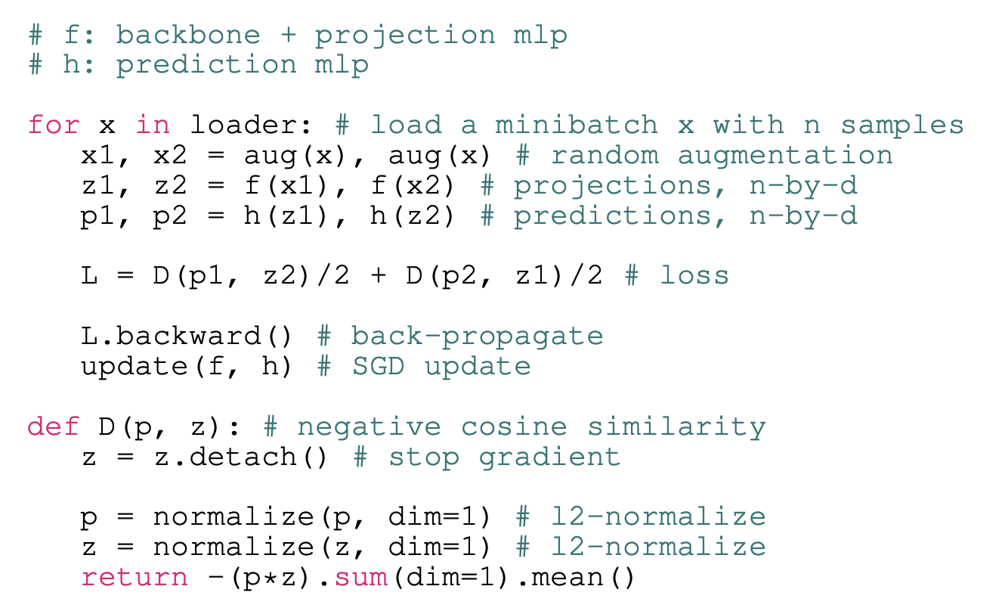
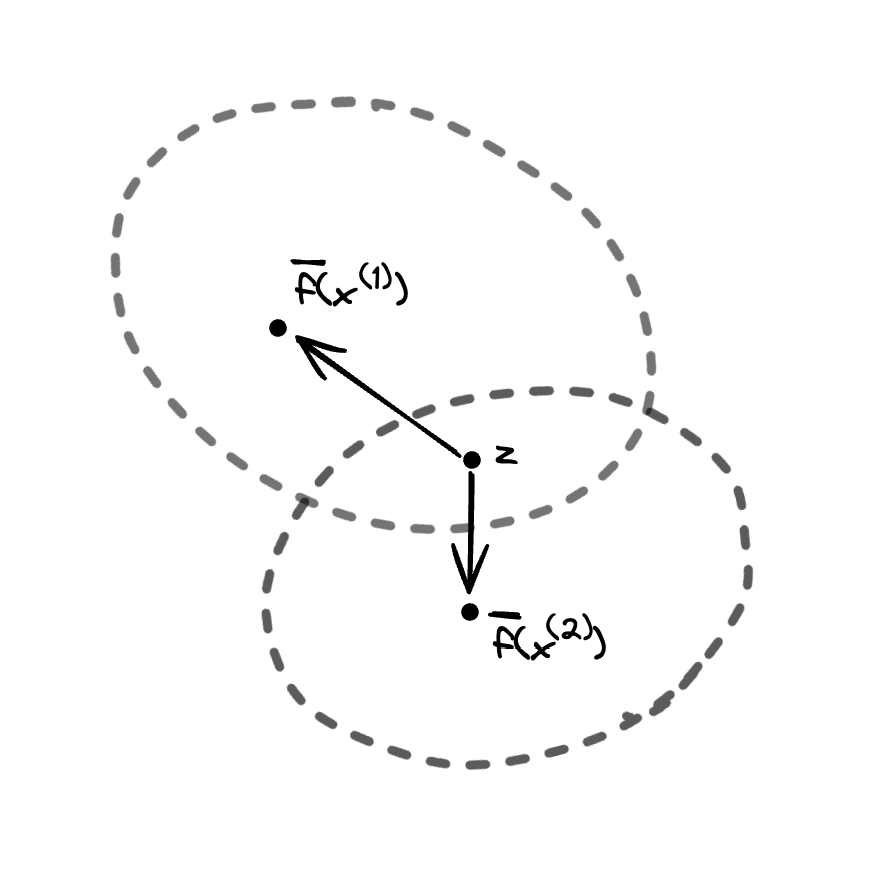

[2023-02-14] A perspective on SimSiam
Intro
SimSiam is a self-supervised non-contrastive image representation learning algorithm. I don't describe the algorithm in great detail here, so I encourage you to read the paper if you haven't already. Pseudocode from the paper is as follows:
To briefly summarize, SimSiam is an algorithm which involves training a visual encoder \(f\) that maps inputs \(x\) to lower-dimensional projections \(z\) to be used for some downstream task, such as classification. The encoder is trained such that random augmentations of the same input map to similar projections. Crucially, unlike contrastive representation learning methods (e.g. SimCLR, CLIP), SimSiam doesn't use negative samples, i.e. the loss doesn't include a term that explicitly penalizes the model for projecting different inputs to similar representations. So, in theory, a projector that maps all inputs to a constant vector would globally minimize SimSiam's objective function. In this post, I discuss why this so-called "representational collapse" doesn't seem to occur in practice, under the assumption that the predictor network, \(h\), is optimal. This post builds upon some of the ideas in section 5 of the SimSiam paper.
Derivation
For each image \(x \in \mathcal{X} = \mathbb{R}^{c \times h \times w}\) in the dataset \(\mathcal{D}\), two random augmentations \(t_1, t_2 \sim \mathcal{T} \) are sampled, where \(\mathcal{T}\) represents the distribution of augmentations which is defined in advance. This gives augmented images \(x_1, x_2 \in \mathcal{X}\) where \(x_1 = t_1 (x)\) and \(x_2 = t_2 (x) \). Given projector \(f\) and predictor \(h\), we have projections \(z_1 = f(x_1), z_2 = f(x_2)\) and predictions \(h(z_1), h(z_2)\). The predictors are optimized so that \(h(z_1)\) has high cosine alignment with \(z_2\) and vice versa. Note that as a result of the stop-gradient operation (see pseudocode), \(z_2\) does not get directly optimized in the direction of \(p_1\), so the projector \(f\) is only updated via the gradient backpropogated through the predictor network \(h\)---in practice, this seems to be crucial for avoiding collapse.
Let the expected projection of an input \(x\), which we denote \(\overline{f}(x)\), be given by \[ \overline{f}(x) = \mathbb{E}_{\mathcal{T}} \left[ \frac{f(\mathcal{T}(x))}{\| f(\mathcal{T}(x)) \|} \right] \]
The predictor network takes as input \(z_1\) with \(x\) unknown, so the optimal prediction, which we denote \(h^*(z_1)\), is given by the conditional expectation \[ \DeclareMathOperator*{\argmax}{argmax} \begin{align*} h^*(z_1) &= \argmax_p \mathbb{E}_{x' \sim \mathcal{D}, t_2 \sim \mathcal{T}} \left[ \left\langle \frac{p}{\| p \|}, \frac{f(t_2(x'))}{\| f(t_2(x')) \|} \right\rangle \Bigm| z_1 \right] \\ &= \argmax_p \left\langle \frac{p}{\| p \|}, \mathbb{E} \left[ \frac{f(t_2(x'))}{\| f(t_2(x')) \|} \Bigm| z_1 \right] \right\rangle \\ &= \mathbb{E} \left[ \frac{f(t_2(x'))}{\| f(t_2(x')) \|} \Bigm| z_1 \right] \\ &= \mathbb{E} \left[ \overline{f}(x') \Bigm| z_1 \right] \\ &= \sum_{x' \in \mathcal{D}} p(x' \mid z_1) \overline{f}(x') \end{align*} \] As a sanity check, we see that one way to attain the minimal loss of zero is via representational collapse: assuming that the expected representation \(\overline{f}(x)\) was constant for all \(x\), then \(h^*(z)\) could be equal to that same constant for all inputs \(z\) to obtain the optimal cosine similarity between the predictions and representations.
Supposing that the predictor models the true conditional expectation \(h^*(z)\), then SimSiam maximizes a training objective which is, in expectation, equal to \[ \mathbb{E}_{\mathcal{T}} \left[ \left\langle \frac{h^*(z)}{\|h^*(z)\|}, \frac{f(\mathcal{T}(x))}{\| f(\mathcal{T}(x)) \|} \right\rangle \right] = \left\langle \frac{h^*(z)}{\|h^*(z)\|}, \overline{f}(x) \right\rangle =: \mathcal{L}^{(x)}(z) \] for a given input \(x\). Of course, in practice, it is difficult to compute \(h^*(\cdot)\) exactly, but it is plausible that a neural network predictor will learn to reasonably approximate it across multiple epochs of training. Note that although we're only considering one half of the loss here, since the loss is symmetric, the remaining analysis still applies to the full loss if we assume that each batch contains both \((x_1, x_2)\) and \((x_2, x_1)\).
Let's take a closer look at the final equality: \[ h^*(z) = \sum_{x' \in \mathcal{D}} p(x' \mid z) \overline{f}(x'). \] A gradient descent step will optimize the encoder network while treating the predictor network as constant. So, we can think of the encoder update as essentially trying to shift \(z\) in order to change the coefficients, given by the conditional probabilities \(p(x' \mid z)\), such that the linear combination, \(h^*(z) = \sum_{x' \in \mathcal{D}} p(x' \mid z) \overline{f}(x')\), is rotated in the direction of the target \(\overline{f}(x)\).
Here, we can see why the stop-gradient is important: without it, the encoder would be optimized such that this target representation, \(\overline{f}(x)\), is shifted towards a weighted average of the representations: \(\sum_{x' \in \mathcal{D}} p(x' \mid z) \overline{f}(x')\). It's reasonable that this would cause the representations for all images to quickly converge to a single point. Only by including the stop-grad do both of the \(\overline{f}\) appearing in this expression get treated as constants (the target \(\overline{f}\) has its gradient explicitly detached, while the one appearing in the equation for the prediction is an estimate about the distribution of projections implicitly held by the predictor network and not a direct function of the parameters of \(f\) itself). Thus, a gradient descent step will only update the encoder, \(f\), based on its effect on \(z = f(\mathcal{T}(x))\) in the conditional probability \(p(x' \mid z)\) for each \(x' \in \mathcal{D}\).
An intuition we can develop immediately is that the objective, \(\mathcal{L}^{(x)}(z)\), is fully maximized for some \((x, z)\) pair if \(x\) is the only representation that \(z\) could have been sampled from, i.e. \(p(x' | z) = 1\) if \(x' = x\) and 0 otherwise. In a sense, this is the 'ideal' outcome, at least from the perspective of SimSiam: if the encoder \(f\) satisfies the property that every input \(x\) has all of its augmentations mapped to their own region in representation space, disjoint from the regions corresponding to other \(x'\), this enables a predictor to, in theory, predict with certainty the identity of the original input \(x\) given the representation \(z = f(\mathcal{T}(x))\).
This sharded optimal state is qualitatively different from the optimal state of contrastive algorithms such as SimCLR. In particular, supposing that SimSiam's representation space has been successfully sharded, there is no incentive for the shards to move further apart from each other. In comparison, SimCLR may, in theory, essentially solve the equivalent of a Thomson problem in an attempt to maximize the distance between negative pairs. Perhaps as a result, we can hypothesize that representation trained through non-contrastive approaches may, at convergence, lie on a lower dimensional manifold of representation space compared to contrastive methods. Maybe this could explain why the performance of SimSiam saturates at higher dimensions (e.g. 2048) compared to SimCLR, which has performance that saturates at only about 256 or 512 dimensions (see Appendix B of the SimSiam paper).
Furthermore, SimCLR, lacking a prediction head, will also attempt to force the distribution over augmentations of projections of a single input to converge to a single point, rather than a comparatively large-volume shard---perhaps this encourages a much higher degree of augmentation invariance for SimCLR representations as compared to SimSiam representations. Maybe, this idea could explain the qualitative differences between rates at which performance degrades as the space of augmentations is ablated for contrastive and non-contrastive methods, i.e. Figure 3b of the BYOL paper.
Moving back to the topic at hand, how might we explain the lack of representational collapse in SimSiam? Let's consider points where the conditional distribution \(p(\cdot \mid z)\) is distributed across multiple inputs. Let's further suppose that we sample some point \(z\) lies in the region between two centers \(\overline f (x^{(1)}), \overline f (x^{(2)})\), i.e. the inner product \(\left\langle \overline{f}(x^{(1)}) - z, \overline{f}(x^{(2)}) - z\right\rangle \) is negative, and \(z\) has positive posterior probabilities \(p(x^{(1)} \mid z)\) and \(p(x^{(2)} \mid z)\). If we sample input \(x^{(1)}\) and see representation \(z\) (an event that we have established to have positive probability), then the encoder will be updated to shift \(z\) such that \(p(x^{(1)} \mid z)\) increases while \(p(x^{(2)} \mid z)\) decreases, likely moving \(z = f(x^{(1)})\) towards \(\overline{f} (x^{(1)})\) and away from \(\overline{f}(x^{(2)})\). Similarly, if we sample input \(x^{(2)}\) and see representation \(z\), then the encoder will be updated to shift \(z\) such that \(p(x^{(2)} \mid z)\) increases while \(p(x^{(1)} \mid z)\) decreases, likely moving \(z = f(x^{(2)})\) towards \(\overline{f} (x^{(2)})\) and away from \(\overline{f}(x^{(1)})\). Thus, we expect distributions \(f(\mathcal{T}(x^{(1)})), f(\mathcal{T}(x^{(2)}))\) of representations of randomly augmented inputs that overlap at such points \(z\) to gradually separate from each other over the course of training, at least if we assume that there is a reasonably high probability to sample such \(z\) that lie somewhere in the region between the two distribution centers. We expect that randomly initialized representation networks \(f\) will tend to map distinct images to different points---indeed, given that the projection MLP of SimSiam has batch normalization between intermediate layers and no ReLU activation on its output, we expect initial representations to have approximately zero mean and unit variance on each dimension. So, since these representations are likely to start far apart, it's likely for such \(z\) to get sampled relatively often, which will only further separate the distributions corresponding to distinct inputs.